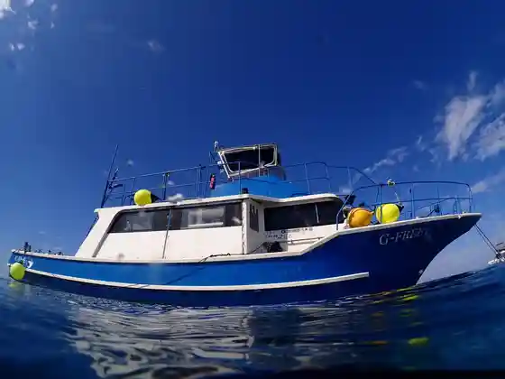
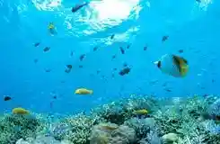

Cafe FIVE FOUR EVER
Ishigaki, Okinawa · 0980-87-6555 · Official / source link
G-FREE DIVING SERVICE
Ishigaki, Okinawa · 0980-87-5381 · Official / source link

HAMA Marinsabisu
Ishigaki, Okinawa · 0980-82-4641 · Official / source link

HangOut
Ishigaki, Okinawa · 080-6155-6202 · Official / source link
HangOut Divers
Ishigaki, Okinawa · 080-6155-6202 · Official / source link
Ishigaki relaxation YAYMASSA
Ishigaki, Okinawa · 070-4095-0089 · Official / source link
NEI MUSEUM OF ART Nei Museum Obuato Yaeyama Yuzen Some Ishigaki Shima
Ishigaki, Okinawa · 0980-83-6303 · Official / source link
RISE Ishigaki Shima
Ishigaki, Okinawa · 0980-87-0136 · Official / source link
Spa Agarosa
Ishigaki, Okinawa · 0980-88-7111 · Official / source link
Yorkeys Cruise
Ishigaki, Okinawa · Official / source link
Ryukyu Rirakuzeshon - Kuraudonain
Ishigaki, Okinawa · Official / source link
Azami Ya Main Shop Minsa Kogei Kan
Ishigaki, Okinawa · 0980-82-3473 · Official / source link
Umi no Kyoshitsu
Ishigaki, Okinawa · 0980-89-2191 · Official / source link
Kamiyaki Chiisaka Maboko Mise
Ishigaki, Okinawa · 0980-82-2347(0120-465-047) · Official / source link
Sausupointo Daibingusabisu
Ishigaki, Okinawa · 0980-88-2277 · Official / source link
Majun no Jajii Ranch
Ishigaki, Okinawa · 0980-88-2319 · Official / source link
Marutaka Farm
Ishigaki, Okinawa · 0980-83-1665 · Official / source link
Emerarudo no Umi Wo Miru Lookout
Ishigaki, Okinawa · Official / source link
Orijinarugurasuwan Ishigaki Mise
Ishigaki, Okinawa · 0980-87-5555 · Official / source link
Kokonattsu Ishigaki Shima
Ishigaki, Okinawa · 0980-88-8089 · Official / source link
Sazangetoburijji
Ishigaki, Okinawa · Official / source link
Sukaiadobencha Umaku
Ishigaki, Okinawa · 080-1076-5844 · Official / source link
Daibingusabisu Shima Nin
Ishigaki, Okinawa · 0980-88-2854 · Official / source link
Daibingushoppu (Umi He)
Ishigaki, Okinawa · 0120-38-2827 · Official / source link
Daibuhausumanta Ishigaki Shima
Ishigaki, Okinawa · 0980-86-7089(080-7711-6987) · Official / source link
Nabiidaibingu Ishigaki Shima
Ishigaki, Okinawa · 0980-87-5143 · Official / source link
Fusaki Beach
Ishigaki, Okinawa · 0980-88-7297 · Official / source link
Hosuraidingusupotto Nami N Uma
Ishigaki, Okinawa · Official / source link
Maesatogorufukosu
Ishigaki, Okinawa · 0980-88-7111 · Official / source link
Maesato Beach
Ishigaki, Okinawa · 0980-88-7111 · Official / source link
Marinpointo
Ishigaki, Okinawa · 0980-83-0575 · Official / source link
Yugurenamoru
Ishigaki, Okinawa · Official / source link
Ippan Shadanhojin Ishigaki Kanko Koryu Kyokai
Ishigaki, Okinawa · 0980-82-2809 · Official / source link
Yaeyama Heiwa Kinen Kan
Ishigaki, Okinawa · 0980-88-6161 · Official / source link
Minami Nu Hama Town Jinko Beach
Ishigaki, Okinawa · 0980-82-4046 · Official / source link
Nanto Yaki
Ishigaki, Okinawa · Official / source link
Tojin Haka
Ishigaki, Okinawa · Official / source link
Miyara Kawa no Hirugi Hayashi
Ishigaki, Okinawa · Official / source link
Kawadaira Wan
Ishigaki, Okinawa · Official / source link
Heikyu Hosaki Lighthouse
Ishigaki, Okinawa · Official / source link
Ugan Saki
Ishigaki, Okinawa · Official / source link
Kyu Miyara Tonochi
Ishigaki, Okinawa · Official / source link
Gongendo (Kuni Shitei Juyo Bunkazai) to Nio Zo (Ken Shitei Yukei Bunkazai)
Ishigaki, Okinawa · Official / source link
Okinawa Ishigaki Shima no Dento Mingeihin Workshop & Shoppu Yachimun Kan Workshop Sa Yume Sa Ra (Samusara)
Ishigaki, Okinawa · Official / source link
Ama Workshop Ishigaki Main Shop
Ishigaki, Okinawa · 0980-83-7878 · Official / source link
Tama Shu Saki Lookout
Ishigaki, Okinawa · Official / source link
Tamaki Marinsabisu
Ishigaki, Okinawa · 0980-83-6978 · Official / source link
Shiraho Coast
Ishigaki, Okinawa · Official / source link
Ken'ei Banna Park
Ishigaki, Okinawa · 0980-82-6993 · Official / source link
Ishigaki Yaima Village
Ishigaki, Okinawa · 0980-82-8798 · Official / source link
Ishigaki Shima Esute Doraiheddosupa | Earii Supa
Ishigaki, Okinawa · 0980-82-7878 · Official / source link
Ishigaki Shima Hoshizora Foto MONDO PIECE
Ishigaki, Okinawa · 090-8449-5505 · Official / source link
Ishigaki Shima no Garasu Kan
Ishigaki, Okinawa · 0980-87-0966 · Official / source link
Ishigaki Shima Adobenchafoto Tour KIBOU
Ishigaki, Okinawa · 090-3336-5151(0980-87-9100) · Official / source link
Ishigaki Shima Sansetto Beach
Ishigaki, Okinawa · 0980-83-1550(0980-89-2234) · Official / source link
Ishigaki Shima Tai Koshiki Massaji Fukura
Ishigaki, Okinawa · 0980-87-5296 · Official / source link
Ishigaki Shima Daibingushoppu Soriddokuru
Ishigaki, Okinawa · 0980-83-8999 · Official / source link
Ishigaki Shima Doriimu Kanko (Kabu)
Ishigaki, Okinawa · 0980-84-3178 · Official / source link
Ishigaki Shima Badotchingugaido SeaBeans
Ishigaki, Okinawa · 0980-87-9230 · Official / source link
Ishigaki Shima Tenmondai
Ishigaki, Okinawa · 0980-88-0013 · Official / source link
Ishigaki Shima Bunkazai Tagengo Seibi Kyogikai
Ishigaki, Okinawa · Official / source link
Ishigaki Shima Limestone Cave
Ishigaki, Okinawa · 0980-83-1550 · Official / source link
Ishigaki Sakka Park
Ishigaki, Okinawa · 0980-82-1212 · Official / source link
Ishigaki Shitei Beach Sokochi Beach
Ishigaki, Okinawa · 0980-87-0510 · Official / source link
Ishigaki Ritsu Yaeyama Museum
Ishigaki, Okinawa · 0980-82-4712 · Official / source link
Ishigaki Yaki Kamamoto
Ishigaki, Okinawa · 0980-88-8722 · Official / source link
Taketomi Town Tourism Association
Ishigaki, Okinawa · 0980-82-5445 · Official / source link
Yonehara no Yaeyamayashi Gunraku
Ishigaki, Okinawa · Official / source link
Yonago Yaki Workshop
Ishigaki, Okinawa · 0980-88-2559 · Official / source link
Sei Fuku Shuzo Kuramoto Baiten : Kojokengaku
Ishigaki, Okinawa · Official / source link
no Soko Gaku
Ishigaki, Okinawa · Official / source link
Choshichi Ya Gyarariishoppu Ishigaki Mise
Ishigaki, Okinawa · Official / source link
Tsudo to Iko
Ishigaki, Okinawa · Official / source link
Dendo Toraikuakutebiteishoppu EVOLRIDE
Ishigaki, Okinawa · 0980-87-5252 · Official / source link
Dendo Baikutsuringu GO SHARE
Ishigaki, Okinawa · 0980-87-5562 · Official / source link
Takane Shuzo
Ishigaki, Okinawa · 0980-88-2201 · Official / source link